可跨域的单点登录(SSO)实现方案【附.Net代码】
来自：梦亦晓 - 博客园
链接：www.cnblogs.com/eggTwo/p/6094072.html（点击尾部阅读原文前往）
SSO简介
定义：
传统的单站点登录访问授权机制是：登录成功后将用户信息保存在session中，sessionId保存在cookie中，每次访问需要登录访问的资源(url)时判断当前session是否为空，为空的话跳转到登录界面登录，不为空的话允许访问。
单点登录是一种多站点共享登录访问授权机制，访问用户只需要在一个站点登录就可以访问其它站点需要登录访问的资源(url)。用户在任意一个站点注销登录，则其它站点的登录状态也被注销。简而言之就是：一处登录，处处登录。一处注销，处处注销。
应用场景：
当一个网站系统稍微复杂一些的时候，需要对业务进行拆分，比如一个电商网站，可以将商品搜索、商品详情、购物车、订单等拆分成一个个子系统，。当一个系统拆分成多个子系统的时候就需要单点登录来做授权了。
业务需求：
最近公司因为业务需要开发了一些子系统需要和主站进行集成，在网上看了好多单点登录的教程，综合各种情况总结出了了下面的单点登录实现思路。其中用到了轮询跳转的思路来解决同时给多个分站写cookie的问题。如有不妥之处欢迎各位批评指正。
实现功能：
1、可完全跨域
2、url透明(分站跳转不需要url传递token或者ticket)
3、同步注销
4、一次将cookie写入到多个分站
效果预览 ：
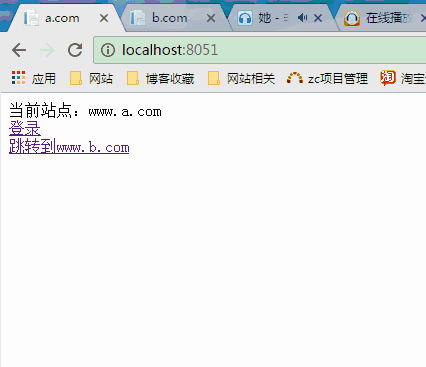
实现思路
实现难点：
这种方式的难点是：怎么在a.com登录的时候将cookie同时写到b.com中。我使用的方式是现在sso.com中维护一个分站集合，在登录成功后以轮询跳转的方式将cookie写到各个分站中。
具体思路：
1、第一次访问a.com-> 点击a.com页面的登录按钮->跳转到sso.com进行登录验证->登录成功后将数据存到cache中->然后以轮询跳转的方式依次访问各个分站并将cookie写到各个分站->最后跳转到登录来源页面
2、登录成功后->访问需要登录的资源(url)->后台发送请求到sso.com进行cookie有效性验证->验证通过访问资源
代码分析
1、新建三个站点：a.com,b.com,sso.com
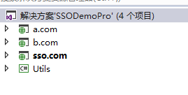
2、在a.com中新建home/index页面，如下：
第一次访问cookie不存在，当以模拟请求的方式到sso.com/login/validateLogin进行验证的时候返回error,页面显示未登录状态
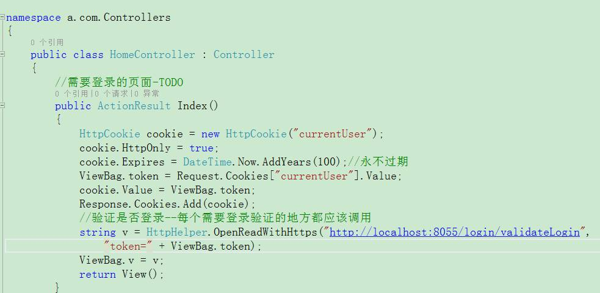
对应的view页面如下：
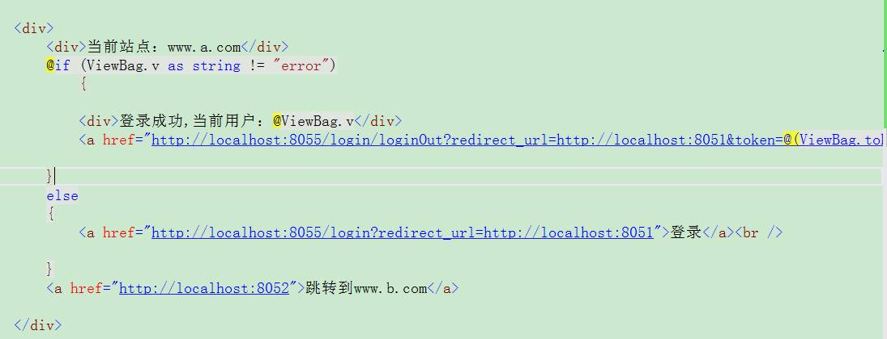
sso.com/login/validateLogin对应的代码：
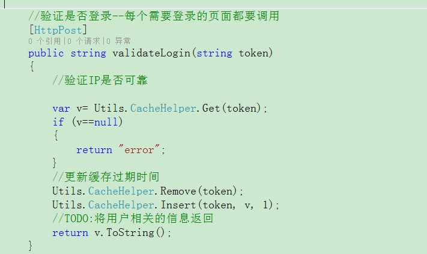
3、在a.com的首页点击登录按钮跳转到sso.com的登录页面(login/index)
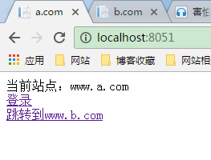
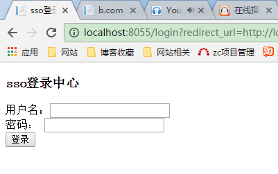
4、sso.com中的登录代码如下：
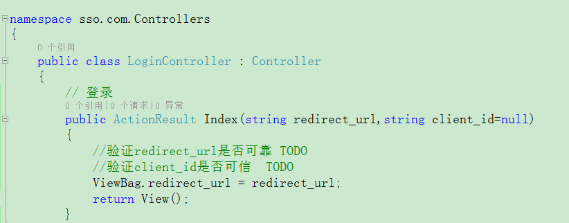
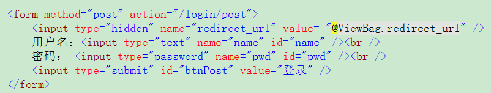
5、点击登录进入到登录验证方法
生成token,同时将用户信息以token为键保存在cache中并设置过期时间
获取分站集合，以重定向轮询的方式依次向每个分站写cookie，最后重定向到登录来源页面
登录验证方法如下：
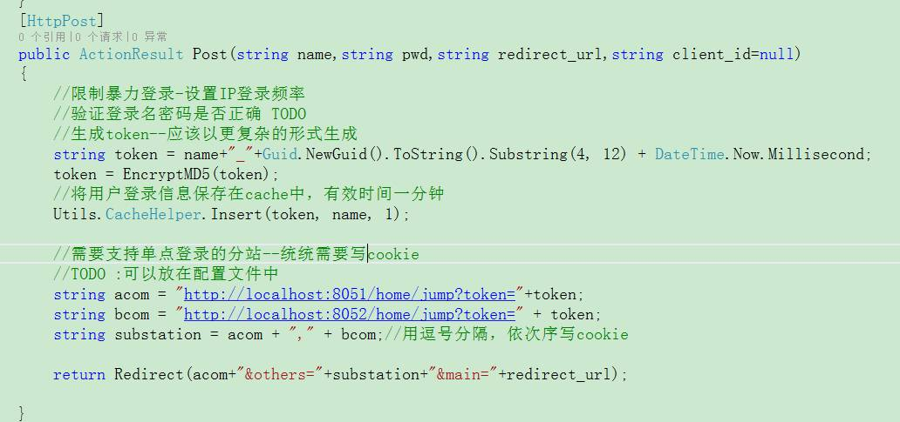
a、com和b.com中的跳转写cookie的方法代码如下：
/// <summary>
/// 用跳转的方式写cookie
/// </summary>
/// <param name="token">授权验证的令牌</param>
/// <param name="others">一系列分站</param>
/// <param name="main">登录成功返回的站点</param>
/// <returns></returns>
public ActionResult Jump(string token, string others, string main)
{
HttpCookie cookie = new HttpCookie("currentUser");
cookie.HttpOnly = true;
cookie.Expires = DateTime.Now.AddYears(100);//永不过期
cookie.Value = token;
Response.Cookies.Add(cookie);
//依次减掉已经写过cookie的分站
if (!string.IsNullOrEmpty(others))
{
//获取分站集合
var substationList = others.Split(new char[] { ',' }, StringSplitOptions.RemoveEmptyEntries).ToList();
if (substationList.Count == 1)
{
return Redirect(others + "&main=" + main);
}
else
{
string currentRedirect = substationList[0];
substationList.RemoveAt(0);
string otherss = string.Join(",", substationList);
return Redirect(currentRedirect + "&others=" + otherss + "&main=" + main);
}
}
else
{
return Redirect(main);//跳转到登录来源页面
}
}6、返回登录来源页面a.com/home/index或者b.com/home/index
此时a.com和b.com已经都有cookie
7、登出(退出登录)的处理
登出直接调用sso.com/login/LoginOut方法，如下：
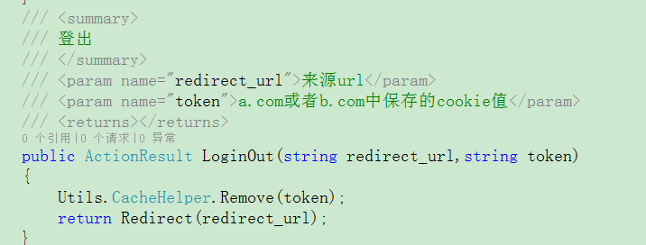
总结
这种将用户登录信息以cache的方式存放在sso.com，并且将cache的键当做cookie的值保存在各个分站的方式实现了跨域单点登录
这种方式的难点是：怎么在a.com登录的时候将cookie同时写到b.com中。我使用的方式是现在sso.com中维护一个分站集合，在登录成功后以轮询跳转的方式将cookie写到各个分站中。
这种方式在实现跨域单点登录的同时也存在一些问题：
1、没有考虑ajax登录的情况
2、没有进行各种安全性验证(IP信任、cookie劫持、暴力登录……)
考虑不足之处，真诚的希望大家可以提出好的想法以及补充的意见
DEMO下载
SSODemoPro.7z http://files.cnblogs.com/files/eggTwo/SSODemoPro.7z
●本文编号42，以后想阅读这篇文章直接输入42即可。
●输入m可以获取到文章目录
推荐《15个技术类公众微信》
涵盖：程序人生、算法与数据结构、黑客技术与网络安全、大数据技术、前端开发、Java、Python、Web开发、安卓开发、iOS开发、C/C++、.NET、Linux、数据库、运维等。